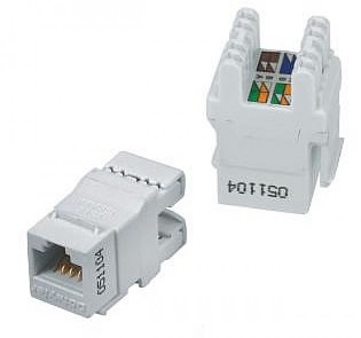
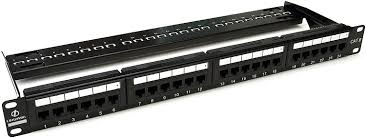
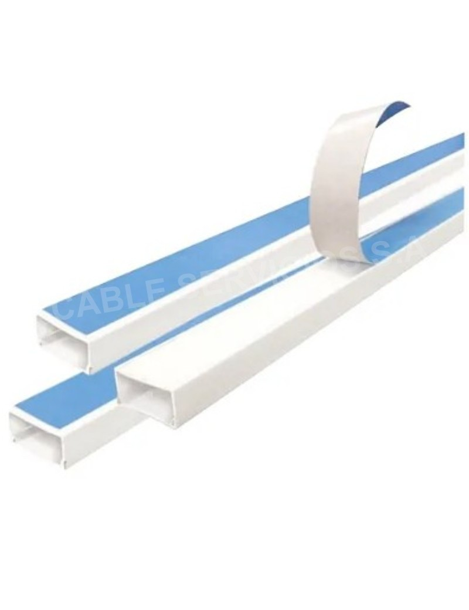
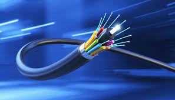

¿Que son los componentes pasivos en la red?
Los componentes pasivos en una red son aquellos dispositivos o elementos que no requieren energía eléctrica para funcionar y no amplifican ni modifican las señales que transmiten. Estos componentes simplemente facilitan la interconexión y distribución de las señales en la red.
RJ-45

Descripcion: El conector RJ-45 (Registered Jack 45) es un conector estándar utilizado principalmente para conectar cables de red Ethernet en aplicaciones de redes de computadoras.
Keystone
Descripcion: El conector Keystone es un elemento fundamental en la infraestructura de cableado estructurado, proporcionando una solución flexible, modular y estandarizada para una amplia gama de aplicaciones tecnológicas.
Cable UTP

Descripcion: El cable UTP (Unshielded Twisted Pair, o Par Trenzado No Blindado) es un tipo de cable utilizado principalmente en redes de datos y telecomunicaciones. Su diseño y características lo convierten en una opción popular para transmitir señales de datos en entornos de redes de área local (LAN).
Patch Panel
Descripcion: Un "Patch Panel" o panel de parcheo es un componente fundamental en la gestión de cableado estructurado en redes de datos, telecomunicaciones y sistemas de audio y video. Permite la organización, distribución y gestión de múltiples conexiones de cables en un único punto central.
Canaletas
Descripcion: Las canaletas para cables son elementos fundamentales en la organización y gestión del cableado eléctrico y de datos en edificaciones, oficinas y entornos industriales..
Patch cord

Descripcion: Un patch cord o cable de parcheo es un tipo de cable que se utiliza para conectar dispositivos en redes de telecomunicaciones y sistemas de cableado estructurado.
Fibra optica
Descripcion: La fibra óptica es un medio de transmisión de datos que utiliza pulsos de luz para transmitir información a través de un cable hecho de vidrio o plástico. Es ampliamente utilizada en telecomunicaciones, redes de datos, y otras aplicaciones donde se requiere una transmisión de alta velocidad y gran ancho de banda.